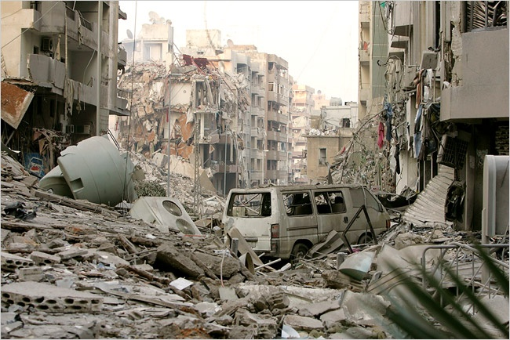
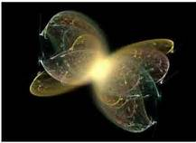
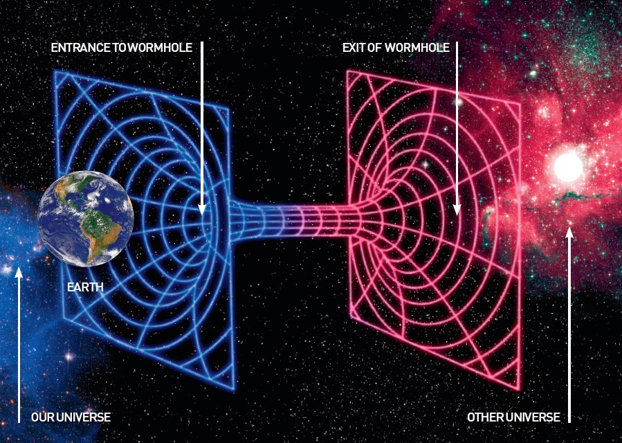

新的量子糾纏理論可以解釋時間的流
咖啡變涼，建築物崩潰，雞蛋打破和星星在這似乎注定要降解成稱為熱平衡均勻單調乏味的狀態的宇宙不了了之。天文學家，哲學家亞瑟·愛丁頓爵士在1927年引用的能量逐漸擴散為不可逆的證據“時間之箭”。
但物理學家的幾代人的困惑，時間之箭似乎並沒有從物理學的基本規律，它的工作方式相同前進的時間，反向跟隨。通過這些法律，它似乎是，如果有人知道在宇宙中所有粒子的路徑和周圍翻轉他們，能量將累加，而不是分散：不溫不火的咖啡會自發地升溫，建築物會從他們的廢墟上升，陽光會偷偷回 太陽。

...建築物倒塌......因為被稱為結果奇特的量子效應“糾纏”。
原來的故事與西蒙斯科學新聞的西蒙斯基金會組織，其使命是通過覆蓋在數學和物理和生命科學的研究動態和發展趨勢，以提高公眾理解科學的社論獨立部門許可轉載。
“在經典物理學中，我們都在努力，”三都波佩斯庫，布里斯托爾英國大學的物理學教授。 “如果我知道的更多，我能扭轉事件，放在一起，打破了雞蛋的所有分子？為什麼我有關？“
當然，他說，時間之箭不是由人類的無知轉向。然而，自19世紀50年代熱力學的誕生，計算能量的傳播已知的唯一辦法是制定粒子的未知軌跡的統計分佈，並表明，隨著時間的推移，無知塗的東西出來。

......星辰無疾而終，這是“量子糾纏”
現在，物理學家們揭露更根本的源時間之箭：能源分散和對象平衡，他們說，因為這樣，當他們互動基本粒子交織在一起 - 稱為奇效“量子糾纏”。
“最後，我們可以理解，為什麼一杯咖啡在一間達到平衡，”托尼短，在布里斯托爾量子物理學家說。 “糾纏建立了咖啡杯的狀態和房間之間的狀態。”
波佩斯庫，短信和他們的同事諾亞林登和Andreas冬報導在雜誌物理評論E的2009年發現，爭論的對象，成為量子力學糾纏達到平衡，或均勻的能量分佈的狀態，時間無限量內的環境。類似的結果通過比勒費爾德在德國大學的彼得·萊曼出現幾個月在物理評論快報更早。
短期和合作者通過表明糾纏導致在有限的時間內加強平衡在2012年的說法。並且，在被貼在科學預印本站點arXiv.org二月工作，兩個單獨的組採取下一步驟，計算該最物理系統迅速達到平衡，在時間尺度正比於它們的尺寸。“為了表明它是與我們的實際的物理世界，流程必須合理時間尺度上發生的事情，”短說。

糾纏與蟲洞
和其他一切 - - 咖啡的傾向達到平衡“很直觀，”薩科布倫納，在日內瓦大學的物理學家量子說。 “但是，當涉及到解釋為什麼會發生，這是第一次它已經被考慮微觀理論推導牢固的基礎上。”
如果研究的新生產線是正確的，那麼時間之箭的故事開始於量子力學想法，在內心深處，自然是內在的不確定性。基本粒子缺乏明確的物理性質，並且僅通過在各種狀態是概率定義。例如，在特定的時刻，一個粒子可能具有順時針旋轉的50％的機會和逆時針方向旋轉的50％的機會。由北愛爾蘭物理學家約翰·貝爾的實驗測試定理說，有粒子沒有“真正”的狀態;概率是可以歸因於它的唯一現實。
量子不確定然後引起纏結，時間的箭頭的推定源。
當兩個粒子相互作用，它們可甚至不再被自己所述，獨立地演變的概率，被稱為“純態”。相反，它們成為這兩個顆粒描述一起更複雜的概率分佈的纏結元件。它可能規定，例如，該粒子自旋方向相反。該系統作為一個整體是在純的狀態，但每個單個顆粒的狀態為“混合”與它的熟人。這兩個可以旅行光年分開，並且每個自旋將與其他的仍然相關，功能愛因斯坦的名言形容為“在距離幽靈行動”。
“糾纏在某種意義上是量子力學的本質”或理事對亞原子尺度的相互作用規律，布倫納說。這種現象背後量子計算，量子密碼學和量子隱形傳態。
那糾纏或許可以解釋的時間之箭的想法第一次發生塞特勞埃德大約30年前，當他在劍橋大學的一位23歲的哲學研究生與哈佛大學物理學學位。勞埃德意識到，量子的不確定性，以及它的方式利差顆粒變得越來越糾纏，可以在舊的古典證明隨著時間的箭頭的真正來源取代人類的不確定性。

糾纏粒子是在量子世界是
使用一個不起眼的方法，它處理的是其基本組成部分的信息單元量子力學，勞埃德花了幾年時間研究洗牌中的0和1的顆粒方面的演變。他發現，隨著顆粒變得越來越彼此，最初描述他們的信息纏結（“1”為順時針旋轉和一個“0”為逆時針方向，例如）將轉移來描述糾纏粒子的系統作為一個整體。這是因為，雖然顆粒逐漸失去個人自主，成為集體狀態走卒。
最終，相關性包含的所有信息，並且單個顆粒含有無。在這一點上，勞埃德發現，顆粒到達平衡狀態，並且它們的狀態停止變化的，像已經冷卻到室溫的咖啡。
“到底發生了什麼的是事情正在變得越來越相互關聯相互搭配，”勞埃德回憶實現。 “時間的箭頭是增加相關的箭頭”。
這個想法，在他1988年的博士論文提出，置若罔聞。當他提交給了雜誌，他被告知，有“在本文中沒有物理。”量子信息理論“是深刻冷門”的時候，勞埃德說，大約時間之箭“問題對瘋子和諾貝爾獎獲得者誰在頭部變軟了。“他回憶說一個物理學家告訴他。
“我是混賬接近駕駛出租車，”勞埃德說。

糾纏的世界和我們的記憶
量子計算的進步，因為原來的量子信息理論到物理學中最活躍的一個分支。勞埃德現在是麻省理工學院公認的學科奠基人之一的教授，他忽略了想法已經重新出現在布里斯托爾物理學家手中更強的形式。較新的證據都比較一般，研究人員說，並保持幾乎所有的量子系統。
“當勞埃德在他的論文中提出的想法，世界上還沒有準備好，”雷納托倫納，在蘇黎世理論物理研究所所長說。 “沒有人了解它。有時候，你必須在正確的時間的想法。“
2009年，布里斯托爾組的證明契合了量子信息理論，對他們的技術開闢了新的用途。這表明，隨著物體與周圍環境互動 - 在一杯咖啡的粒子碰撞與空氣，例如 - 有關它們的屬性“漏出和整個環境變得抹黑，”波佩斯庫解釋。這種本地信息丟失導致咖啡的國家甚至整個房間的純淨狀態的不斷發展停滯不前。除了罕見的，隨機波動，他說，“它的狀態停止隨時間變化的。”
因此，咖啡一杯不溫不火不能自發熱身。原則上，作為房間的純態發展，咖啡會突然成為從空中純，並進入其自己的純態。但也有可供這幾乎從未發生過的咖啡那麼多的混合態比單純的狀態 - 一個人必須要活得比宇宙見證吧。該統計祈使時間的不可逆性箭頭的外觀。 “從本質上講糾纏打開了你一個非常大的空間，”波佩斯庫說。 “這就像你在公園，在下次啟動的門，遠離平衡態。然後你進入，你有這個巨大的地方，你在它失去了。你永遠不回來了門“。

宇宙糾纏
在時間的箭頭的新的故事，它是通過信息的量子糾纏的損失，而不是主觀缺乏人類的知識，驅動一杯咖啡與周圍空間的平衡。房間最終與外部環境達到平衡，環境平衡朝著漂移速度更慢與宇宙的其餘部分。 19世紀熱力學巨頭認為這一過程能量的逐漸擴散，增加宇宙的熵整體或紊亂。如今，勞埃德，波佩斯庫和其他人在自己的領域看到的時間之箭不同。在他們看來，信息變得越來越分散，但它永遠不會完全消失。因此，他們聲稱，雖然熵局部增加，宇宙的熵總在零保持不變。
“宇宙作為一個整體是一個純粹的狀態，”勞埃德說。 “但它的各個部分，因為它們糾纏著宇宙的其餘部分，是混合物。”
時間之箭的一個方面仍然沒有解決。 “沒有什麼比在這些作品中說，為什麼你開始在門口，”波佩斯庫說，指的是公園的比喻。 “換句話說，他們沒有解釋為什麼宇宙的初始狀態是從平衡為止。”他說，這是一部關於宇宙大爆炸的性質問題。
儘管在計算平衡時間尺度的最新進展，新辦法還沒有取得進展，作為分析的具體事物的熱力學性質，如咖啡，玻璃或物質異國狀態的工具。 （幾個傳統thermodynamicists聲稱自己只是模糊地知道新的辦法。）“事情是要找到哪些東西表現得像窗玻璃哪些東西表現得像一杯茶的標準，”雷納說。 “我希望看到新的文件在這個方向邁出的一步，但還需要更多的工作要做。”
一些研究人員表示懷疑，這種抽象的方法熱力學將永遠不會達到解決的任務“的具體觀測的行為很難基本事實，”作為勞埃德把它。但是，概念進步和新的數學形式主義已經幫助研究解決有關理論的熱力學問題，如量子計算機的基本限制乃至宇宙的最終命運。

量子糾纏理論
“我們一直在想我們可以利用量子機做多，”光子科學巴塞羅那研究所的保羅Skrzypczyk說。 “由於系統還沒有達到平衡，我們想要得到的工作出來。我們有多少有益的工作可以提取？我怎麼可以介入做一些有趣的事情？“
肖恩·卡羅爾在技術加州理工學院的理論宇宙學家，是採用新的形式主義在他的最新作品在宇宙時間的箭頭。 “我感興趣的是宇宙的超長期命運太空時代，”卡羅爾的作者說，“從永恆到這裡：探尋時間的終極理論”，“這就是我們做不成的情況真正知道所有的物理相關的法律，所以是有意義的想起一個很抽象的水平，這就是為什麼我認為有用這個基本的量子力學的待遇“。
二十六年後，勞合社的關於時間的箭頭大的想法倒扁，他很高興能看到它的崛起，並已在黑洞悖論信息應用的看法，最近的工作。 “我認為現在的共識是，有物理的，”他說。
且不說有些理念。
據科學家，我們記住過去而不是未來時間的箭頭的另一個歷史混雜表現，能力也可以被理解為相互作用粒子之間的相關性的堆積。當你在一張報紙上看到一條消息，你的大腦變得與它通過到達你的眼睛的光子相關。只有從那個時候起你將能夠記住有消息說什麼。至於勞埃德所說：“目前可以通過與我們的環境變得相關流程定義”。
對於糾纏整個宇宙的穩步增長的背景下，當然，時間本身。物理學家強調，儘管在理解時間的變化是如何發生的巨大的進步，他們在揭露的時間本身或性質沒有取得進展的原因似乎不同於空間的三個維度（包括感知和量子力學方程）。波佩斯庫稱此為“物理學的最大未知數之一。”
“我們可以討論一個小時前，我們的大腦是在用更少的東西相關的狀態的事實，”他說。 “但我們的看法，即時間是流動的 - 這是一個完全不同的事情。最可能的是，我們需要在物理上進一步變革，這將告訴我們有關。“
原來的故事與廣達雜誌，SimonsFoundation.org其使命是通過涵蓋數學，物理和生命科學的研究動態和發展趨勢，以提高公眾理解科學的社論獨立部門許可轉載。